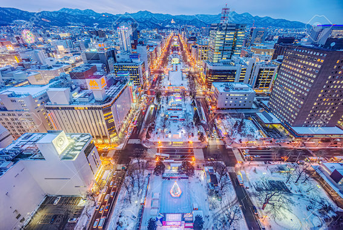
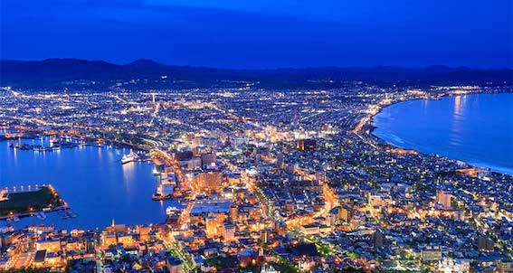

Hokkaido
Welcome to My Mission Area!
Hokkaido is Japan's northernmost city. Unlike Fukuoka, its cold climate brings significant snowfall. Before becoming part of Japan in 1869, Hokkaido was the homeland of the "Ainu" people, leaving behind a distinctive culture. Here, you can experience landscapes and history distinct from traditional Japan.
Japan Sapporo Mission is where I served. Hokkaido's food and scenery were absolutely amazing. While sushi is famous throughout Japan, if you want the best sushi, you should go to Hokkaido.
